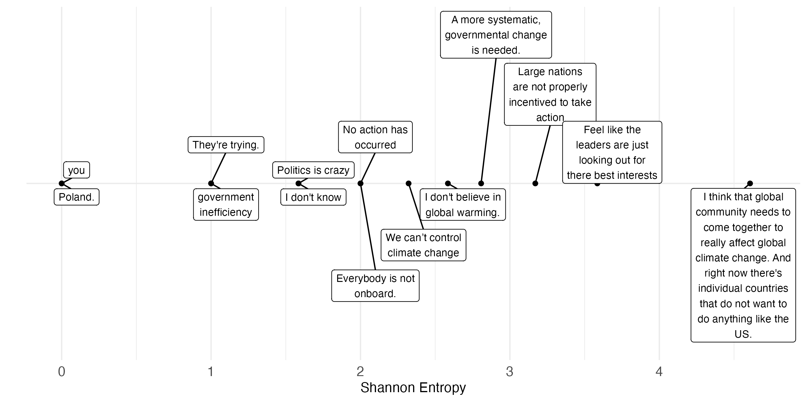
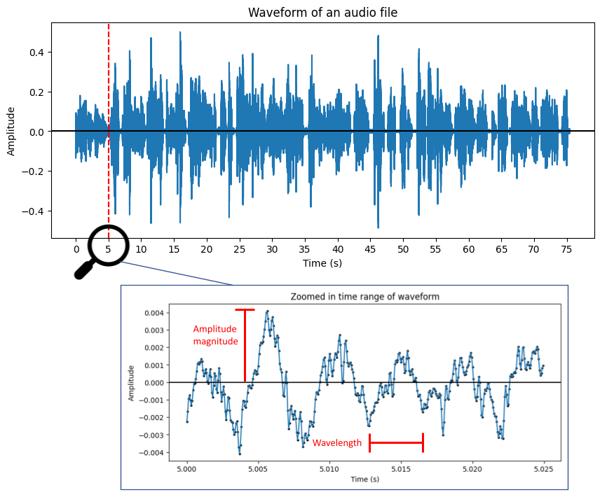
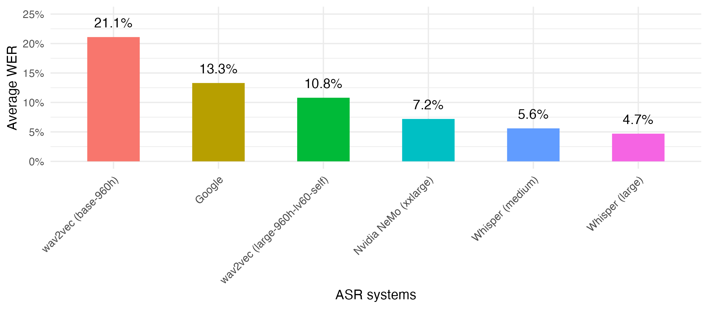
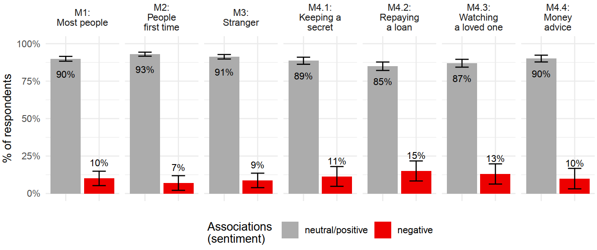
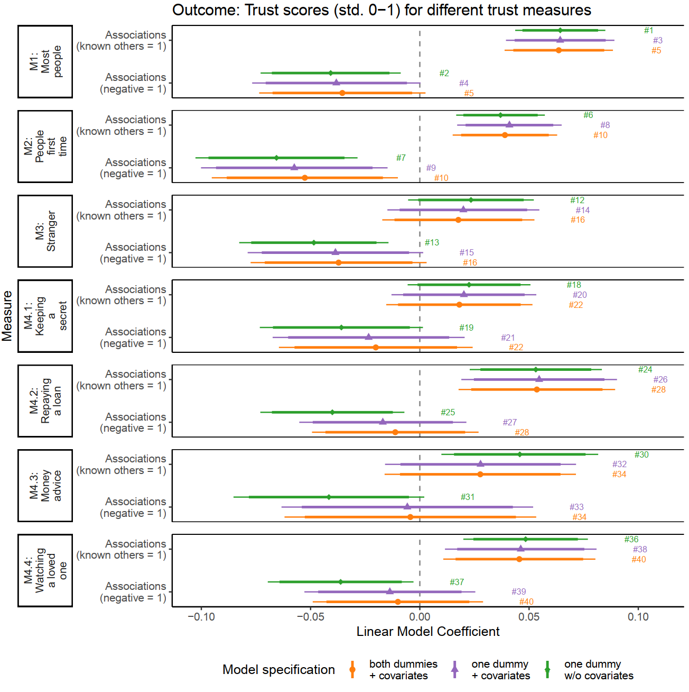

Portfolio
In my previous work and projects, I’ve applied statistical analysis methods, ranging from descriptive techniques to advanced methodologies. One of my focus in advanced methods is Natural Language Processing, where I use methods of machine learning and deep learning techniques to generate knowledge about textual data.
In terms of machine learning, I mostly enjoy and appreciate supervised machine learning (Andrew Ng’s explantion on why these architectures are the most useful), I have also worked in projects successfully utilizing unsupervised techniques (e.g., topic modeling) and large language models (e.g., zero-shot prompting with GPT-3.5).
Entropy analysis
- Summary: Questionnaires sometimes include open-ended questions (and if we had better access to methods for analyzing their open-ended responses, we would see them even more often). In this project, I investigated whether open-ended answers are useful in terms of their information content. This research required me to define and to operationalize information content (i.e., the amount of information given in an answer). Among various measures, I proposed the use of a measure from information theory, the entropy of a response. The below figure is my visualization for exemplary survey answers alongside their entropy score.

Note. The topic ofthis questionnaire item concerned environmental issues.
Topic Model Analysis
- Summary: Topic Modeling is a widely famous and often used method from unspervised Machine Learning aimin at exploring given topics in a corpus. Throughout my work, I have used topic models at various instances, most often for the usecase of exploring and learning about new, unstructured datasets. I follow the devlopment of topic models since many years, andused various of them (e.g., LDA, BERTopic), but just recently I started working on identifying topics with the help of a Large Language Model. In particular, I use GPT-3.5-turbo and prompt it too identify, label and describe topics in a given corpus. I don’t provide any examples of topics, hence this is also called zero-shot prompting.
The below dataset shows the main topics alongside des
| Topic Name | Topic description |
|---|---|
| Climate Change Denial | Some respondents express skepticism about human-caused climate change and the ability of humans to make a significant impact on the environment. |
| Global Leadership | Concerns about the lack of leadership and cooperation among world leaders in addressing climate change. |
| Pollution and Emissions | References to major polluting countries like China and India, as well as the normalization of pollution. |
| Inequality and Suspicion | Mentions of inequality among nations and suspicion of other countries’ actions. |
| Capitalism and Profit Motive | Doubts about countries prioritizing profit over environmental safety under capitalism. |
| International Efforts | Comments on international agreements like the Paris Agreement and the need for global cooperation. |
| Lack of Information | Acknowledgment of insufficient information to form a confident opinion on climate change actions. |
Automatic Speech Recognition
- Summary: Spoken language provides analysts and researchers with very dense and rich amounts of information. For example speech, in contrast to written language, can deliver additional information through characteristics such as speed, intonation and volume, as well as other non-verbal elements, such as laughter, pauses and sighs. This led me to collect voice answers in various of my survey projects and for one of my white papers I compared different algorithms for automatic speech recognition. In this comparison I find that whisper, a speech-to-text algorithm provided by openAI performs best in terms of word error rates.


Fine-tuning of a BERT model to assign open-ended survey answers to pre-defined categories
- Summary: The below shows results from one of my research projects in which I investigated various methods of supervised machine learning approaches to assign open-ended survey answers to pre-defined categories. For example, I was interested in detecting whether a certain survey answer is given in positive, negative or neutral sentiment.

